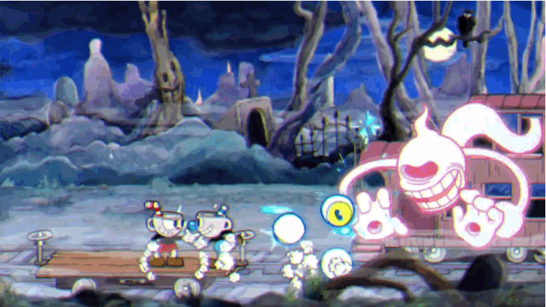
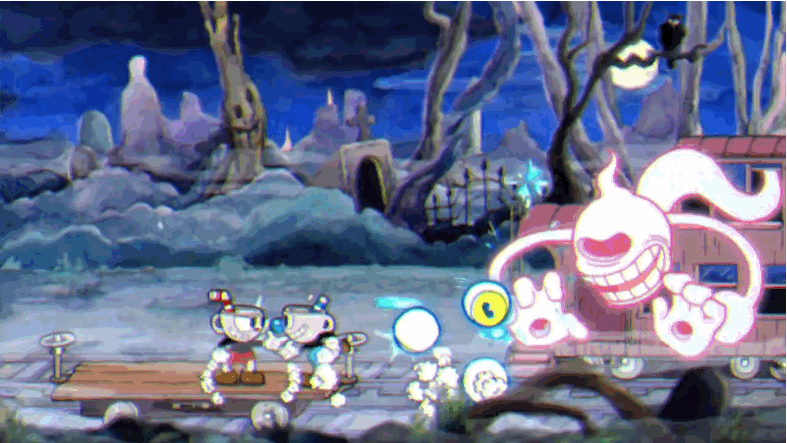

"Cuphead" é um jogo de plataforma e tiro desenvolvido e publicado pelo Studio MDHR. Lançado inicialmente em setembro de 2017, "Cuphead" é conhecido por seu estilo de arte único, inspirado nos desenhos animados da década de 1930.
Inspiração nos Anos 1930: O visual de "Cuphead" é fortemente influenciado pelos cartoons dos anos 1930, como aqueles criados pelos estúdios Fleischer e Disney.
Animação Tradicional: Todos os visuais do jogo foram desenhados à mão e animados de forma tradicional, uma técnica rara em jogos modernos.
Música Original: A trilha sonora também remete àquela época, com jazz e músicas de big band compostas por Kristofer Maddigan.
 

Gênero: "Cuphead" é um jogo de run and gun (correr e atirar), com foco em batalhas contra chefes.
Dificuldade: O jogo é notoriamente difícil, exigindo precisão e memorização dos padrões de ataque dos chefes.
Modos de Jogo: Pode ser jogado tanto solo quanto em modo cooperativo local, onde um segundo jogador controla o personagem Mugman, irmão de Cuphead.

Adaptação para TV: Em 2022, uma série animada chamada "The Cuphead Show!" estreou na Netflix, expandindo a história e o universo do jogo.
Crítica: Recebeu aclamação da crítica por seu estilo artístico, música e desafio.
Prêmios: Ganhou diversos prêmios, incluindo Melhor Estreia Indie e Melhor Direção de Arte no The Game Awards 2017.